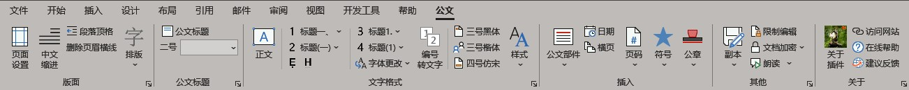

界面综述

工具栏分为"版面"、"公文标题"、"文字格式"、“插入”、“其他”、“关于”，共六个分组区域。分别对应了"版面设置","文字样式","插入功能","副本和保密设置","设置和帮助"
版面设置

快速设置公文所需的页边距、行数和字数控制、嵌入不常用字体等。
页面设置会自动保存上次设置，无需每次重复调整。
中文缩进和顶格
中文缩进可以快速对选定的文字设置段落首行缩进2字符。顶格则是取消缩进。
删除页眉横线
插入页码或者对页眉页脚的操作，可能导致 Word 自动为页眉添加横线，使用本功能可以快速去掉横线。
排版菜单
可以快速实现“断行重排”、“删除空白”、“删除多余空行”、“全半角替换”、“换行转回车”等等。
尤其适合对复制自 pdf 或网页文字的快速排版。
文字样式

该区域可以选定文字进行快速设置， 比如公文大标题、一级至四级公文标题、正文格式。
可以快速替换字体，解决公字体格式不统一的问题。
点击“公文样式”，可以一键生成常用公文样式，通过“样式侧栏”对文字进行段落级别的快速设置。

插入功能
- 快速插入公文红头、红线、版记线、装订线。
- 快速插入页码（居中，居右，外侧）
- 快速插入公文格式日期
- 快速插入公文常用符号，比如六角括号和★等。
- 快速插入公章（链接式/嵌入式）
- 快速插入横版页面
副本保密
可按照实际需求用于文档分享或备份。
副本功能可以将文档快速生成为 pdf/doc/图片 等格式，功能堪比 WPS 收费项目。
保密功能可以快速设置密码和读写权限。
朗读功能可以便于校对文本，测试演讲效果。
高级设置

在关于界面，您可以为作者的辛勤付出，用微信扫码赞助。
您也可以查看系统信息和插件版本并检查更新。
点击“关于”插件，可以进入高级设置，为每个公文格式指定字体名称和大小。
应用场景
公文排版助手不仅可以用于政府机关常见的15种公文, 也可以广泛用于各类规范文本的排版。
以下是一些常见应用场景，均为实际用户自行分享的文章。
超强Word排版插件，论文、标书、报告、公文等排版，一键搞定
30000 字文档、论文 5 分钟完成格式排版，大学生和职场码字人士的救命插件！ []() []() []() []()